Chapter 15 Visualization
🍎 Learning goals:
- Analyze the principles behind informative visualizations
- Incorporate visualization into analysis workflow
- Learn to make “the design plot”
- Select different visualizations of variability and distribution
- Connect visualization concepts to measurement principles.
What makes visualizations so useful, and what role do they play in the toolkit of experimentology? Simply put, data visualization is the act of “making the invisible visible.” Our visual systems are remarkably powerful pattern detectors, and relationships that aren’t at all clear when scanning through rows of raw data can immediately jump out at us when presented in an appropriate graphical form (Zacks & Franconeri, 2020). Good visualizations aim to deliberately harness this power and put it to work at every stage of the research process, from the quick sanity checks we run when first reading in our data to the publication-quality figures we design when we are ready to communicate our findings. Yet our powerful pattern detectors can also be a liability; if we’re not careful, we can easily be fooled into seeing patterns that are unreliable or even misleading. As psychology moves into an era of bigger data and more complex behaviors, we become increasingly reliant on data visualization literacy (Börner et al., 2019) to make sense of what is going on.
🔬 Case study: Mapping a pandemic
 Mapping out a
cholera epidemic (1854). Line shows region for which Broad Street pump
is nearest.
Mapping out a
cholera epidemic (1854). Line shows region for which Broad Street pump
is nearest.
In 1854, a deadly outbreak of cholera was sweeping through London. The scientific consensus at the time was that diseases like cholera spread through breathing poisonous and foul-smelling vapors, an idea known as the “miasma theory” (Halliday, 2001). An obstetrician and anesthesiologist named John Snow, however, had proposed an alternative theory: rather than spreading through foul air, he thought that it was spreading a polluted water supply (Snow, 1855). To make a public case for this idea, he started counting cholera deaths. He marked each case on a map of the area, and indicated the locations of the water pumps for reference. Furthermore, a line could be drawn representing the region that was closest to each water pump, a technique which is now known as a Voronoi diagram. The resulting illustration clearly reveals that cases clustered around an area called Golden Square, which received water from a pump on Broad Street. Although the precise causal role of these maps in Snow’s own thinking is disputed, and it is likely that he produced them well after the incident (Brody et al., 2000), they have nonetheless played a significant role in the history of data visualization (Friendly & Wainer, 2021).249.
Nearly two centuries later, as the Covid-19 pandemic swept through the world, governmental agencies like the CDC produced maps of the outbreak that have become much more familiar:
Figure 15.1: Map showing the known locations of cumulative coronavirus cases by share of the population in each county (reproduced from the New York Times)
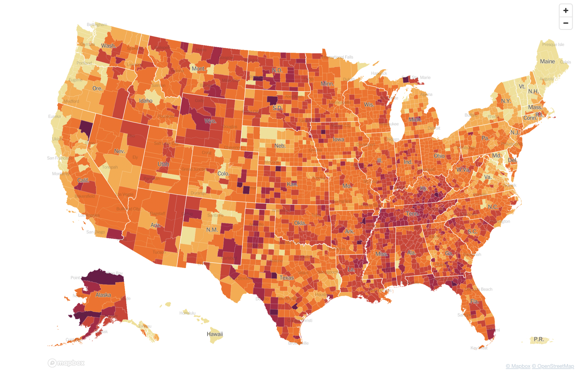These maps make abstract statistics visible: By assigning higher cumulative case rates to darker colors, we can see at a glance which areas have been most affected. And we’re not limited by the spatial layout of a map. We’re now also used to seeing the horizontal axis correspond to time and the vertical axis correspond to some value at that time. Curves like the following, showing the 7-day average of new cases, allow us to see other patterns, like the rate of change. Even though more and more cases accumulate every day, we can see at a glance the different ‘waves’ of cases, and when they peaked.
Figure 15.2: 7-day average of new reported COVID cases (reproduced from the New York Times)

While these visualizations capture purely descriptive statistics, we often want our visualizations to answer more specific questions. For example, we may ask about the effectiveness of vaccinations: how do case rates differ across vaccinated and unvaccinated populations? In this case, we may talk about ``breaking out’’ a curve by some other variable, like vaccination status:
Figure 15.3: Rates of COVID cases by vaccination status (reproduced from covid.cdc.gov)
)](images/viz/vaccination.png)
From this visualization, we can see that unvaccinated individuals are about 6x more likely to test positive. At the same time, these visualizations were produced using observational data, and therefore make it challenging to draw causal inferences. For example, people were not randomly assigned to vaccination conditions, and those who have avoided vaccinations may differ in other ways than those who sought out vaccinations. Additionally, you may have noticed that these visualizations typically do not give a sense of the raw data, the sample sizes of each group, or uncertainty about the estimates. In this chapter, we will explore how to use visualizations in our own carefully controlled behavioral experiments that license causal inferences.
15.1 Basic principles of (confirmatory) visualization
In this section, we begin by introducing a few simple guidelines to keep in mind when making informative visualizations in the context of experimental psychology250. Remember that the needs may be distinct from other contexts, such as journalism or public policy. You may have seen beautiful and engaging full-page graphics with small print and a wealth of information. The art of designing and producing these graphics is typically known as infoviz and should be distinguished from what we call statistical visualization (Gelman & Unwin, 2013). Roughly, infoviz aims to construct rich and immersive worlds to visually explore: a reader can spend hours pouring over the most intricate graphics and continue to find new and intriguing patterns. Statistical visualization, on the other hand, aims to crisply convey the logic of a specific inference at a glance.
In this section, we review several basic principles of making statistical visualizations. These are the production-ready figures that anchor the results section of a paper and accompany the key, pre-registered analyses of interest. We then return below to the role of visualization in more exploratory analyses.
![Unlike statistical visualization, which aims to clearly expose the logic of an experiment at a glance, infoviz aims to provide a rich world of patterns to explore [reproduced from @infoviz].](images/viz/viz_infoviz.jpeg) Figure 15.4: Unlike statistical visualization, which aims to clearly expose the logic of an experiment at a glance, infoviz aims to provide a rich world of patterns to explore (reproduced from “Relativity’s Reach,” 2015).
Figure 15.4: Unlike statistical visualization, which aims to clearly expose the logic of an experiment at a glance, infoviz aims to provide a rich world of patterns to explore (reproduced from “Relativity’s Reach,” 2015).
15.1.1 Principle 1: Show the design
There are so many different kinds of graphs (bar graphs, line graphs, scatter plots, and pie charts) and so many different possible attributes of those graphs (colors, sizes, line types).
How do we begin to decide how to navigate these decisions?
The first principle guiding good statistical visualizations is to show the design of your experiment.
There are strong (unwritten) conventions about how your analysis should map onto graphical elements, and following these conventions can minimize confusion.
Start with the variables you manipulate, and make sure they are clearly visible.
Conventionally, the primary manipulation of interest (e.g. condition) goes on the x-axis, and the primary measurement of interest (e.g. responses) goes on the y-axis.
Other critical variables of interest (e.g. secondary manipulations, demographics) are then assigned to “visual variables” (e.g. color or size)
Visualization libraries like ggplot help you think about exposing the design by asking you to make these assignments in an aesthetics layer that goes at the very top:
ggplot(aes(x = condition, y = response, color = ..., linetype = ..., ))15.1.2 Principle 2: Facilitate comparison
 Figure 15.5: Principles of visual perception can help guide visualization choices.
Figure 15.5: Principles of visual perception can help guide visualization choices.
Now that you’ve mapped your design clearly to the figure’s axes, how do you decide which graphical elements to display? In principle, you might think, these assignments are all arbitrary anyway: as long as we clearly label our choices, it doesn’t matter whether we use lines, points, bars, colors, textures, or shapes. While it’s true that there are many ways to show the same data, being thoughtful about our choices can make it much easier for readers to interpret our findings. The second principle is to facilitate comparison along the dimensions relevant to our scientific questions. For example, it is easier for our visual system to accurately compare the location of elements (e.g. noticing that one point is a certain distance away from another) than to compare their areas or colors (e.g. noticing that one point is bigger or brighter than another). To illustrate, suppose we have a simple pre-post design with two groups: a treatment group and a control group.
We could always plot the means of each group as colors:

or areas:
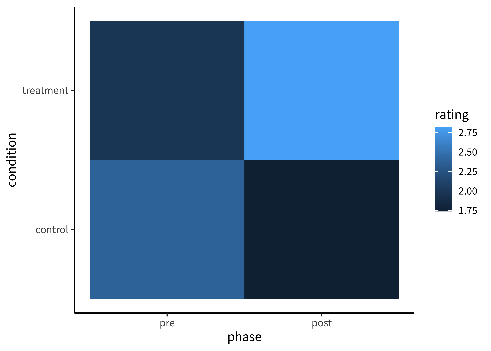
These plots allow us to see that one condition is (qualitatively) bigger than others, but it’s hard to tell how much bigger. Additionally, this way of plotting the data places equal emphasis on phase and condition, but we may instead have in mind particular contrasts, like the change from pre- to post-tests and how that change differs across conditions. An alternative is to show four bars: two on the left showing the ‘pre’ phase and two on the right showing the ‘post’ phase. Maybe the control group is red and the treatment group is blue.

This is slightly better: it’s easier to compare the heights of bars than the ‘blueness’ of squares, and mapping condition to color draws our eye to that contrast. However, we can do even better by noticing that the main question we are testing in our design is an interaction. Our statistic of interest is a difference of differences. To what extent is the pre-post change for the control group different than the pre-post change for the treatment group? Some researchers have gotten proficient at reading off interactions from bar plots, but they also require a complex set of eye movements. We have to look between the red bars, and then look between the blue bars and implicitly judge one difference against the other: the actual statistic isn’t explicitly shown anywhere! What could help facilitate this comparison? Consider the following line plot:
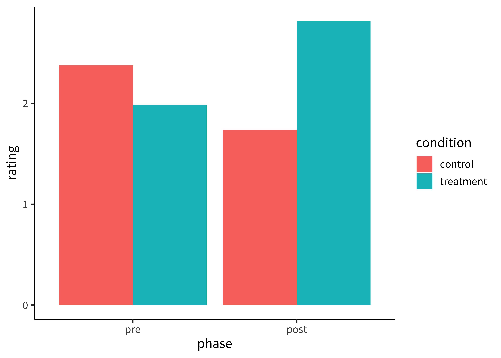
Now the contrast we want to interpret is highlighted visually. It is easier to directly compare the slope of two lines than mentally compute a difference of differences between four bars. A few corollaries of this principle see this helpful presentation from Karl Broman:
It is easier to compare values that are adjacent to one another. This is especially important when there are many different conditions included on the same plot. If particular sets of conditions are of theoretical interest, place them close to one another. Otherwise, sort conditions by a meaningful value (rather than alphabetically).
When possible, put labels directly next to data rather than in a legend. Legends force readers to glance back and forth to remember what different colors or lines mean.
When making histograms or density plots, it is challenging to compare distributions when they are place side-by-side. Instead, facilitate comparison of distributions by vertically aligning them, or making them transparent and placed on the same axes. v
If the scale makes it hard to see important differences, consider transforming the data (e.g. taking the logarithm).
If a key variable from your design is mapped to color, choose the color scale carefully. For example, if the variable is binary or categorical, choose visually distinct colors to maximize contrast (e.g. black, blue, and orange). If the variable is ordinal or continuous, use a color gradient. If there is a natural midpoint (e.g. if some values are negative and some are positive), consider using a diverging scale (e.g. different colors at each extreme). Remember also that a portion of your audience may be color-blind. Palettes like viridis have been designed to be colorblind-friendly and also perceptually uniform (i.e. the perceived difference between 0.1 and 0.2 is approximately the same as the difference between 0.8 and 0.9). Finally, if the same manipulation or variable appears across multiple figures in your paper, keep the color mapping consistent: it is confusing if ‘red’ means something different from figure to figure.
15.1.3 Principle 3: Show the data
Looking at older papers, you may be alarmed to notice how little information is contained in the graphs. The worst offenders might show just two bars, representing averaged values for two conditions. This kind of plot adds very little beyond a sentence in the text reporting the means, but it can also be seriously misleading. It hides real variation in the data, making a noisy effect based on a few data points look the same as a more systematic one based on a larger sample. Additionally, it collapses the distribution of the data, making a multi-modal distribution look the same as a unimodal one. The third principle of modern statistical visualization is therefore to show the data to visualize variability in some form.
The most minimal form of this principle is to always include error bars251 Error bars turn a purely descriptive visualization (e.g showing COVID-19 case counts over time) into an inferential one. They represent a minimal form of uncertainty about the possible statistics that might have been observed, not just the one that was actually observed. As such, they allow the viewer to interpret the means as estimates.
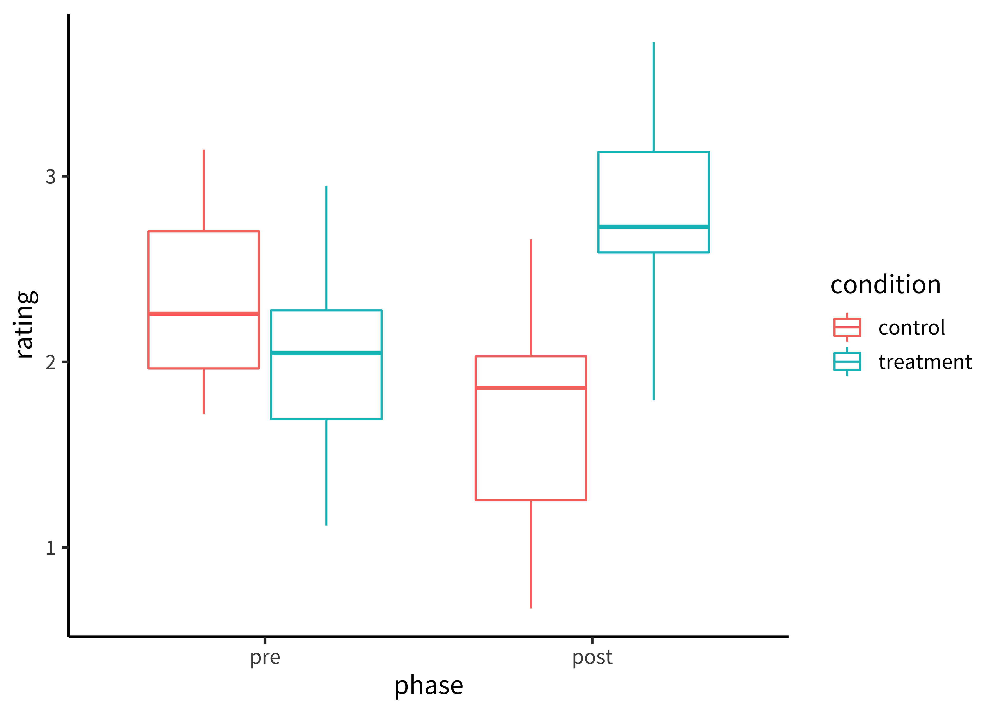
But we can do even better. By overlaying the distribution of the actual data points on the same plot, we can give the reader information not just about the statistical inferences but the underlying data supporting those inferences. There are many ways of showing the distribution. For example, a ‘boxplot’ shows the median (a horizontal line) in the center of a box extending from the lower quartile (25%) to the upper quartile (75%). Lines then extend out to the biggest and smallest values (excluding outliers, which are shown as dots).
We can also show the raw data as jittered values with low transparency:
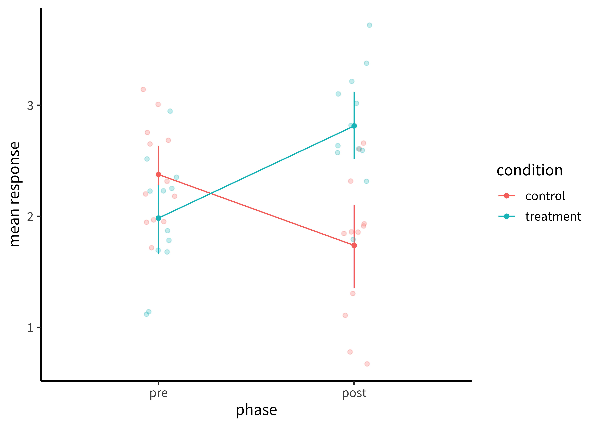 Perhaps the format that takes this principle the furthest is the so-called “raincloud plot” (Micah Allen et al., 2019). A raincloud plot combines the raw data (the ‘rain’) with a smoothed density (the ‘cloud’) and a boxplot giving the median and quartiles of the distribution.
Figure 15.6: Example of a raincloud plot, reproduced from Micah Allen et al. (2019)
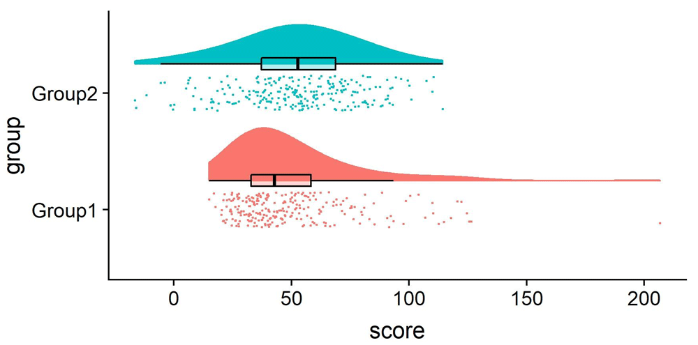⌨️ Interactive box: Visualizing uncertainty with error bars
One common misconception is that error bars are a measure of variance in the data, like the standard deviation of the response variable.
Instead, they typically represent a measure of precision extracted from the statistical model.
In older papers, for example, it was common to use the standard error of the mean (SEM; see Chapter XXX).
Remember that this is not the standard deviation of the data distribution but of the sampling distribution of the mean that is being estimated.
Given the central limit theorem, which tells us that this sampling distribution is asymptotically normal, it was straightforward to estimate the standard error analytically using the empirical standard deviation of the data divided by the square root of the sample size: sd(x) / sqrt(length(x)).
Error bars based on the SEM often looked misleadingly small, as they only represent a 68% interval of the sampling distribution and go to zero quickly as a function of sample size.
As a result, it became more common to show the 95% confidence interval instead: [-1.96 \(\times\) SEM, 1.96 \(\times\) SEM].
While these analytic equations remain common, an increasingly popular alternative is to bootstrap confidence intervals.
A deep theoretical understanding of the bootstrap technique is outside the scope of this text, but you can think of it as a way of deriving a sampling distribution from your dataset using simulations instead of mathematical derivations about the properties of the sampling distribution.
The bootstrap is a powerfully generic technique, especially when you want to show error bars for summary statistics that are more complex than means, where we do not have such convenient asymptotic guarantees and “closed-form” equations.
For example, suppose you are working with a skewed response variable or a dataset with clear outliers, and you want to estimate medians and quartiles.
Or suppose you want to estimate proportions from categorical data, or a more ad hoc statistic like the AUC (area underneath the curve) in a hierarchical design where it is not clear how to aggregate across items or participants in a mixed-effects model.
Analytic estimators of confidence intervals can in principle be derived for these statistics, subject to different assumptions, but it is often more transparent and reliable in practice to use the bootstrap.
As long as you can write a code snippet to compute a value from a dataset, you can use the bootstrap.

As we can see, the bootstrapped 95% CI looks similar to the analytic 95% CI derived from the standard error, except the upper and lower limits are slightly asymmetric (reflecting outliers in one direction or another). Of course, the boostrap is not a silver bullet and can be abused in particularly small samples. This is because the bootstrap is fundamentally limited to the sample we run it on. It can be expected to be reasonably accurate if the sample is reasonably representative of the population. But at the end of the day, as they say, “there’s no such thing as a free lunch.” In other words, we cannot magically pull more information out of a small sample without making additional assumptions about the data generating process.
15.1.4 Principle 4: Maximize information, minimize ink
Now that we have the basic graphical elements in place to show our design and data, it might seem like the rest is purely a matter of aesthetic preference, like choosing a pretty color scheme or font. However, even at this stage there are well-founded principles to make the difference between an effective visualization and a confusing one. Simply put, we should try to use the simplest possible presentation of the maximal amount of information: we should maximize the “data-ink ratio”. To calculate the amount of information shown, E. R. Tufte (1983) suggested a measure called the “data density index” (ddi), the “numbers plotted per square inch”. The worst offenders have a very low density while also using a lot of excess ink.
![This figure uses a lot to ink to show exactly three numbers, for a "ddi" of $0.2$ [This came from the Washington Post, 1978; see @wainer1984display for other examples].](images/viz/bad-viz1.png) Figure 15.7: This figure uses a lot to ink to show exactly three numbers, for a “ddi” of \(0.2\) [This came from the Washington Post, 1978; see Wainer (1984) for other examples].
Figure 15.7: This figure uses a lot to ink to show exactly three numbers, for a “ddi” of \(0.2\) [This came from the Washington Post, 1978; see Wainer (1984) for other examples].
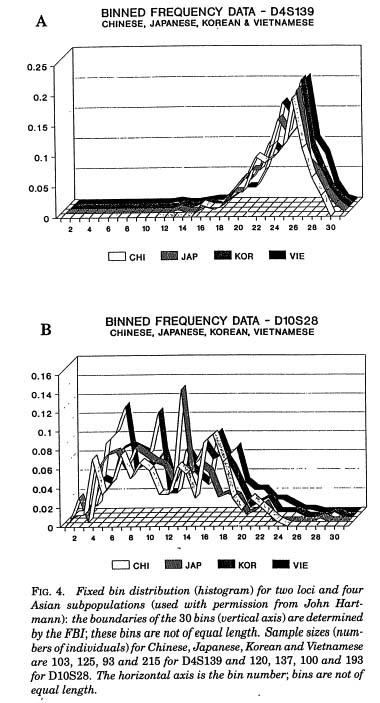 Figure 15.8: This figure uses complicated 3D ribbons to compare distributions across four countries (from Roeder, 1994). How could the same data have been presented more legibly?
The defaults in modern visualization libraries like ggplot prevent some of the worst offenses, but are still often suboptimal.
For example: consider whether the visual complexity introduced by the default grey background and grid lines is justified, or whether a more minimal theme would be sufficient (see the ggthemes package for a good collection of themes).
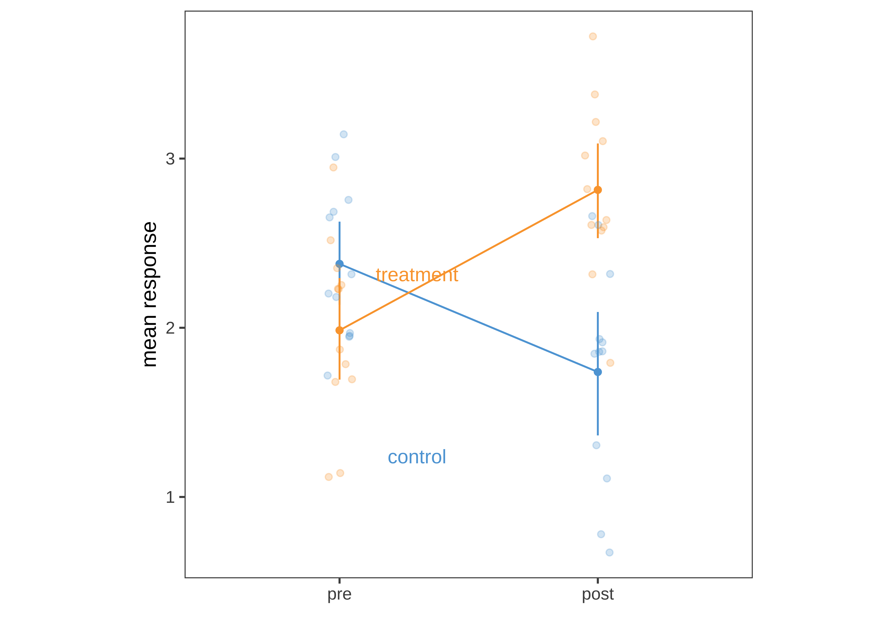
A few additional tips:
Make sure the font size of all text in your figures is legible and no smaller than other text in your paper (e.g. 10pt). This may require, for example, making the axis breaks sparser, rotating text, or changing the aspect ratio of the figure.
An important tool to keep in your visualization arsenal is the facet plot. When your experimental design becomes more complex, consider breaking variables out into a grid of facets instead of packing more and more colors and line-styles onto the same axis. In other words, while higher ‘information density’ is typically a good thing, you want to aim for the sweet spot before it becomes too dense and confusing. Remember Principle 2. When there is too much going on in every square inch, it is difficult to guide your readers eye to the comparisons that actually matter, and spreading it out across facets gives you additional control over the salient patterns.
Sometimes these principles come into conflict, and you may need to prioritize legibility over, for example, showing all of the data. For example, suppose there is an outlier orders of magnitude away from the summary statistics. If the axis limits are zoomed out to show that point, then most of the plot will be blank space! It is reasonable to decide that it is not worth compressing the key statistical question of your visualization the bottom centimeter just to show one point. It may suffice to truncate the axes and note in the caption that a single point was excluded.
Fix the axis labels. A common mistake is to keep the default shorthand you used to name variables in your plotting software instead of more descriptive labels. Use consistent terminology for different manipulations in the main text and figures. If anything might be clear, explain it in the caption.
Different audiences may require different levels of specificity. Sometimes it is better to collapse over secondary variables (even if they are included in your statistical models) in order to control the density of the figure and draw attention to the key question of interest.
15.2 Exploratory visualization
So far in this chapter we have focused on principles of confirmatory data visualization: how to make ‘production-quality’ figures that convey the key pre-registered analyses without hiding sources of variablility or misleading readers about the reliability of the results. Yet this is only one role that data visualization plays when doing science. An equally important role is called exploratory visualization: the more routine practice of understanding one’s own data by visualizing it. In a sense, this role is analogous to the sense of exploratory analyses in Chapter XX. We typically do not pre-register exploratory visualizations, and when we decide to include them in a paper they are typically in the service of a secondary argument (e.g. checking the robustness of an effect or validating that some assumption is satisfied).
But, at least in our experience, this kind of visualization plays a much more ubiquitous role in the analyst’s day-to-day activities. While confirmatory visualization is primarily audience-driven and concerned with visual communication, exploratory visualization is first and foremost a “cognitive tool” for the analyst. The first time we load in a new dataset, we start up a new feedback loop. We ask ourselves questions and answer them by making pictures. These pictures then raise furher questions and are often our best tool for debugging our code. In this section, we consider best practices for exploratory visualization.
15.2.1 Distributional information
![Anscombe's quartet [@anscombe1973graphs].](images/viz/viz_anscombe.png) Figure 15.9: Anscombe’s quartet (Anscombe, 1973).
Figure 15.9: Anscombe’s quartet (Anscombe, 1973).
The central insight of exploratory visualization – the reason it is uniquely important for data science – is that it gives us access to holistic, distributional information that cannot be captured in any single summary statistic. The most famous example is known as “Anscombe’s quartet,” a set of four datasets with identical statistics. They have the same means, the same variances, the same correlation, the same regression line, and the same \(R^2\) value. Yet when they are plotted, they reveal striking structural differences. The first looks like a noisy linear relationship – the kind of idealized relationship we imagine when we imagine a regression line. But the second is a perfect quadratic arc, the third is a perfectly noiseless line with a single outlier, and the fourth is nearly categorical: every observation except one shares exactly the same x-value.
If our analyses are supposed to help us distinguish between different data-generating processes, corresponding to different psychological theories, it is clear that these four datasets would correspond to dramatically different theories even though they share the same statistics. Of course, there are arbitrarily many datasets with the same statistics, and most of these differences don’t matter (this is why they are called “summary” statistics, after all!) The problem arises when we operationalize a theory’s predictions in terms of a single statistic (e.g. a difference between groups) and lose track of the bigger pattern. Visualization forces us to zoom out and see the bigger picture.
 using the (drawMyData)[http://robertgrantstats.co.uk/drawmydata.html] tool, we can actually construct an arbitrary number of different graphs with exactly the same statistics [@matejka2017same,@murray2021generating]. This set, known as the [The Datasaurus Dozen](https://www.autodesk.com/research/publications/same-stats-different-graphs), even has the same set of boxplots.](images/viz/datasaurus.png) Figure 15.10: Originally inspired by a figure constructed by Cairo (n.d.) using the (drawMyData)[http://robertgrantstats.co.uk/drawmydata.html] tool, we can actually construct an arbitrary number of different graphs with exactly the same statistics Murray & Wilson (2021). This set, known as the The Datasaurus Dozen, even has the same set of boxplots.
Figure 15.10: Originally inspired by a figure constructed by Cairo (n.d.) using the (drawMyData)[http://robertgrantstats.co.uk/drawmydata.html] tool, we can actually construct an arbitrary number of different graphs with exactly the same statistics Murray & Wilson (2021). This set, known as the The Datasaurus Dozen, even has the same set of boxplots.
15.2.2 Data diagnostics
Our data is always messier than we expect.
There might be a bug in our coding scheme, a column might be mislabeled, or might contain a range of values that we didn’t expect.
Maybe our design wasn’t perfectly balanced, or something went wrong with a particular participant’s keyboard presses.
Most of the time, it’s not tractable to manually scroll through our raw data looking for such problems.
Visualization is our first line of defense for the all-important process of running “data diagnostics.”
If there is a weird artifact in our data, it will pop out if we just make the right visualizations.
So which visualizations should we start with?
The best practice is to always start by making histograms of the raw data.
For example, here are the histograms for the classic iris dataset containing measurements from different kinds of flowers.
Immediately we can see that sepal length and width seem to be distributed roughly normally, but petal length and petal width look bimodal. We might then break out the data by species:
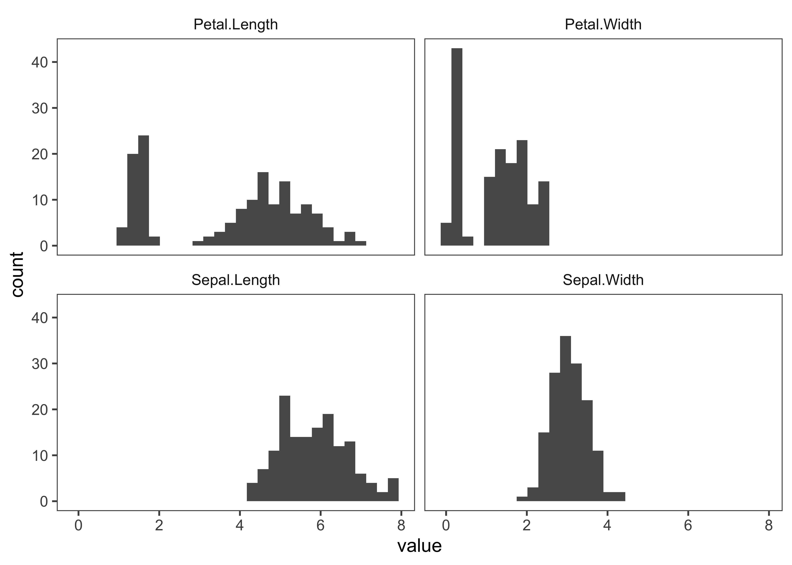
It looks like there is generally strong distributional separation across the different species. In the case of petal length and width, they barely overlap.
While these data look clean, the same visualization often reveals outliers.
For example, we might notice a datapoint with a negative value, which shouldn’t be possible (these are lengths and widths!)
Or we might notice gaps in the data for a particular species, with lengths being clustered around integer values, which might indicate that the researcher in charge of doing data entry for that species was rounding in a different way than the other species.
Or we might might notice that the “species” attribute is missing for some values, and trace it back to a bug reading in our data (maybe there was a missing comma in our csv file).
In addition to these histograms, it is natural to proceed to looking at pairwise relationships, which we aren’t able to determine from independent histograms.
The ggpairs function in the ggally package makes this particularly straightforward.
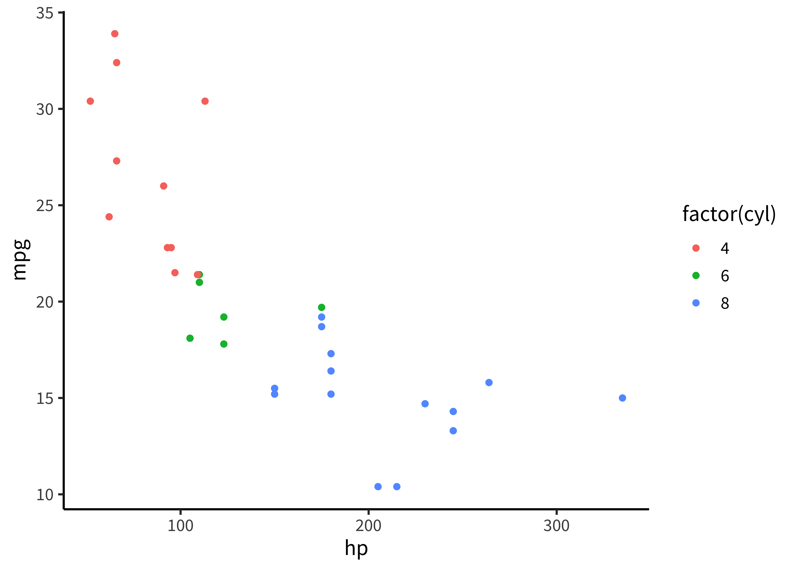
For example, we can immediately notice that petal length and width are strongly correlated with one another, and we might start to worry about co-linearity problems in a regression trying to tease them apart (see Chapter XX). Conversely, the bi-modality of the relationship between sepal length and petal length looks more complicated. There is one cloud of points that is strongly correlated, but another cloud of points that is not: they have the same short petal length regardless of sepal length. Reporting a single correlation and claiming a relationship between petal length and sepal length (\(r=.87, p<0.001\)) might therefore be misleading. Instead, we might want to be careful to break this relationship out by species and test whether it is stronger for some species than others.
⚠️ Accident report: [Distributional] gorillas in our midst.
Many data scientists don’t bother checking what their data looks like before proceeding to test specific hypotheses. Yanai & Lercher (2020) cleverly designed an artificial dataset for their students to test for such blindness. Each row of the dataset contained an individual’s body mass index (BMI) and the number of steps they walked on a given day. While the spreadsheet looked innocuous, the data was constructed such that simply plotting the raw data revealed a picture of a gorilla. One group of 19 students was given an explicit set of hypotheses to test (e.g. about the relationship between BMI and steps). Fourteen of these students failed to notice a gorilla, suggesting that they evaluated these hypotheses without ever visualizing their data. Another group of 14 students were simply asked what, if anything, they could conclude (without being given explicit hypotheses). More of these students apparently made the visualization, but five of them still failed to notice the gorilla!
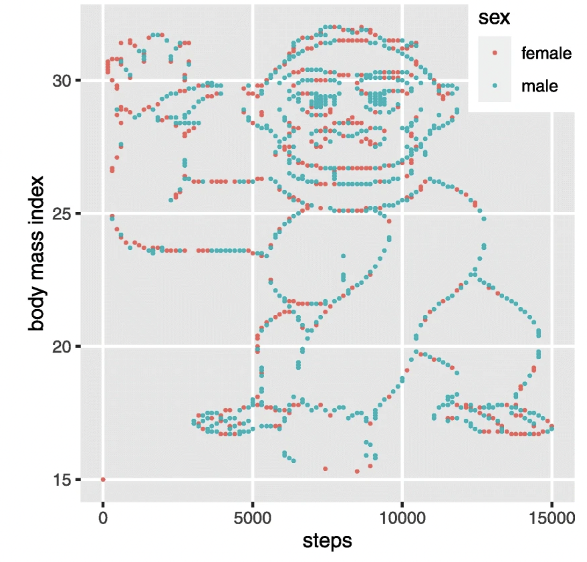 A dataset was constructed by Yanai & Lercher (2020) which revealed a picture of a gorilla when the raw data were plotted.
While it may not be surprising that a group of students would take the shortest path to completing their assignment, similar concerns have been raised in much more serious cases concerning how experienced researchers could fail to notice obviously fraudulent data. For example, when (Evidence of Fraud in an Influential Field Experiment about Dishonesty, 2021) made a simple histogram of the car mileage data reported in (Shu et al., 2012) and released publicly by (Kristal et al., 2020), they were immediately able to observe that it followed a perfectly uniform distribution, truncated at exactly 50,000 miles. Given a little thought, this pattern should be extremely puzzling. Over a given period of time, we would typically expect something more bell-shaped: a small number of people will drive very little (e.g. 1000 miles), a small number of people will drive a lot (e.g. 50,000 miles), and most people will fall between these tails. So it is highly surprising to find exactly the same number of drivers in every mileage bin. While further specialized analyses revealed further evidence of fraud (e.g. based on patterns of rounding and pairs of duplicated data points), this humble histogram was already enough to set off alarm bells. A recurring regret raised by the co-authors of this paper is that they never thought to making this visualization before reporting their statistical tests.
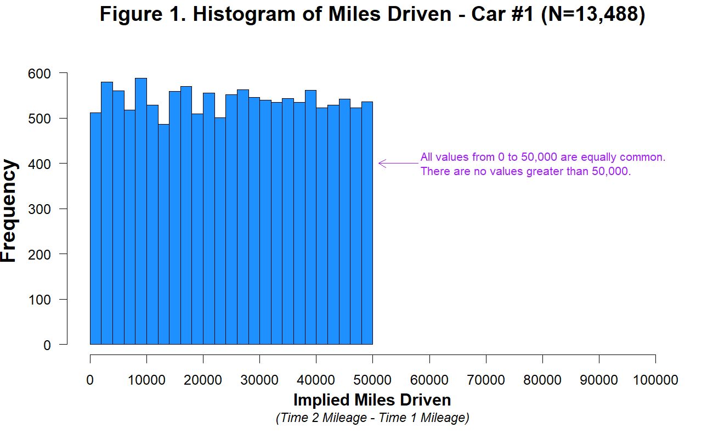 A suspiciously uniform distribution abruptly cutting off at 50k miles. Ring the alarm!
15.3 Conclusion
This chapter has given a short review of the principles of data visualization, especially focusing on the needs of experimental psychology, which are often quite different than those of other fields. We particularly focused on the need to make visualization part of the experimenter’s analytic workflow. Picking up the idea of a “default model” from Chapter 7, we discussed a default “design plot” that reflects the key choices made in the experimental design. Within this framework, we then discussed different visualizations of distribution and variability that better align our graphics with the principles of measurement and attention to raw data that we have been advocating throughout.
📚 Suggested readings:
There are many good introductions to data visualization. Here are two social-science focused books whose advice we agree with and that also contain a lot of practical information and helpful R code for the same packages we use here.
Healy, K. (2019). Data Visualization: A Practical Introduction. Princeton University Press.
Wilke, C. O. (2019). Fundamentals of Data Visualization. O’Reilly Media.
References
Actually, the use of disease maps goes back even further! (Seaman, 1798) mapped an outbreak of yellow fever in New York City to argue that deaths clustered around a handful of waste sites. He turned out to be right, but for the wrong reasons! These waste sites were breeding grounds for mosquitos, which were the real culprits. Coincidentally, Seaman is also known as the first to introduce vaccines to the United States. He vaccinated his children against smallpox and later organized a program to provide free vaccines to the public.↩︎
Given this relatively narrow focus, a full treatment of visualization is outside the scope of this book. The classic volumes are by John W. Tukey et al. (1977) and Edward R. Tufte & Robins (1997), and we recommend Healy (2018) for a more contemporary guide. For the purposes of understanding the examples in this chapter, it should be sufficient to work through our R tutorials for data manipulation and visualization in Appendices C and D↩︎
And be sure to tell the reader what the error bars represent (a 95% confidence interval? a standard error of the mean?)↩︎